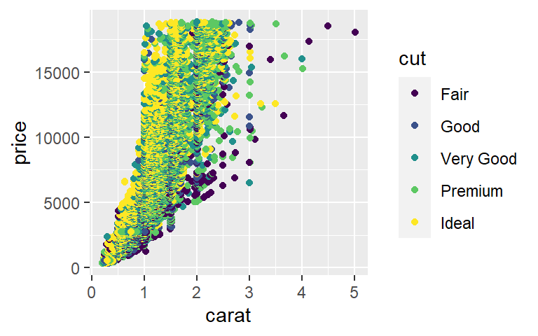
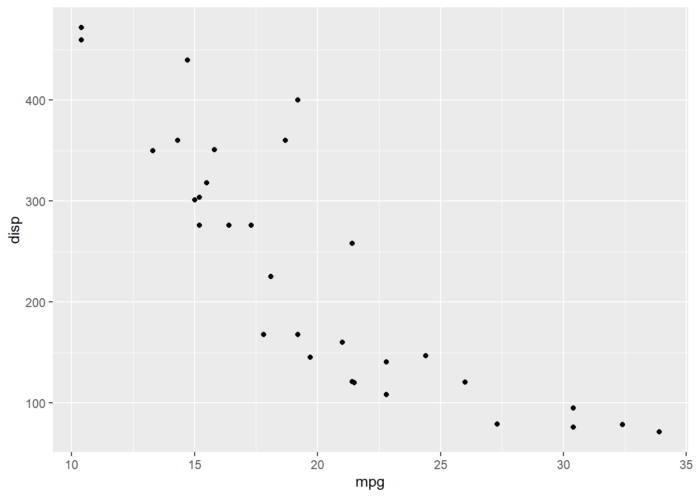
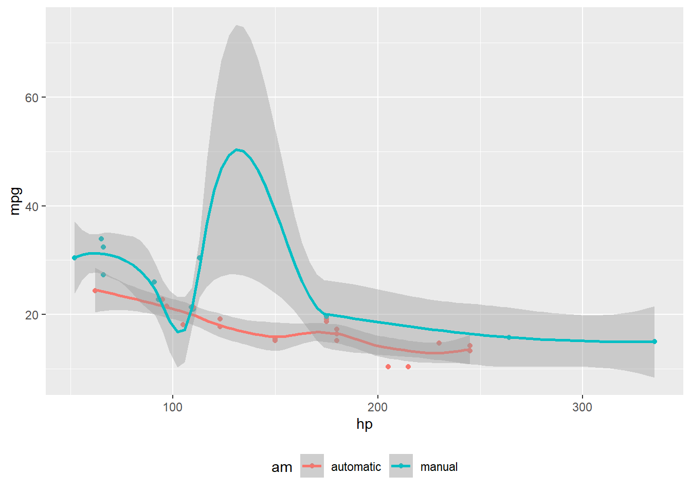
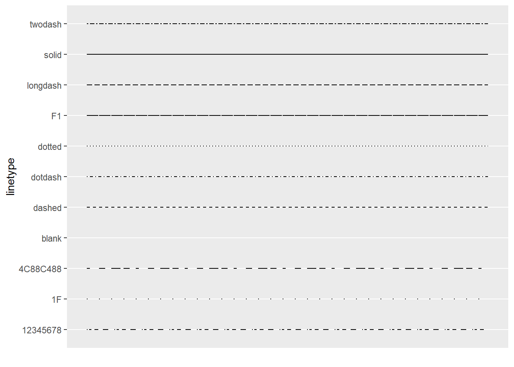

flowchart LR
A[Hard edge] --> B(Round edge)
B --> C{Decision}
C --> D[Result one]
C --> E[Result two]
italics
bold
asdf
verbatim code
inline math: \(E = mc^{2}\) https://quarto.org
link to Quarto
Bullet List
Numberbed list (4-space indent seems preferable)
Callouts: note that there are five types of callouts, including: note, tip, warning, caution, and important.
flowchart LR
A[Hard edge] --> B(Round edge)
B --> C{Decision}
C --> D[Result one]
C --> E[Result two]

library(ggplot2)
d <- diamonds
head(d)# A tibble: 6 × 10
carat cut color clarity depth table price x y z
<dbl> <ord> <ord> <ord> <dbl> <dbl> <int> <dbl> <dbl> <dbl>
1 0.23 Ideal E SI2 61.5 55 326 3.95 3.98 2.43
2 0.21 Premium E SI1 59.8 61 326 3.89 3.84 2.31
3 0.23 Good E VS1 56.9 65 327 4.05 4.07 2.31
4 0.29 Premium I VS2 62.4 58 334 4.2 4.23 2.63
5 0.31 Good J SI2 63.3 58 335 4.34 4.35 2.75
6 0.24 Very Good J VVS2 62.8 57 336 3.94 3.96 2.48sqrt(-2)r_fibonacci <- function(n) {
if (n <= 1) {
return(n)
} else {
return(r_fibonacci(n - 1) + r_fibonacci(n - 2))
}
}
r_fibonacci(10)[1] 55ggplot(d, aes(x = carat, y = price, color = cut)) + geom_point()
import os,sys,time
def py_fibonacci(n):
if n <= 1:
return n
else:
return(py_fibonacci(n-1) + py_fibonacci(n-2))
py_fibonacci(10)55R:
data <- mtcars %>%
select(mpg, cyl, disp)
head(data, 3) mpg cyl disp
Mazda RX4 21.0 6 160
Mazda RX4 Wag 21.0 6 160
Datsun 710 22.8 4 108Python:
r.data = r.data.assign(km_per_liter=lambda x: x.mpg / 2.352)
r.data.head(3) mpg cyl disp km_per_liter
Mazda RX4 21.0 6.0 160.0 8.928571
Mazda RX4 Wag 21.0 6.0 160.0 8.928571
Datsun 710 22.8 4.0 108.0 9.693878Back to R:
data <- data %>% mutate(mpg_converted = km_per_liter * 2.352)
head(data,3) mpg cyl disp km_per_liter mpg_converted
Mazda RX4 21.0 6 160 8.928571 21.0
Mazda RX4 Wag 21.0 6 160 8.928571 21.0
Datsun 710 22.8 4 108 9.693878 22.8The column names in data are: mpg, cyl, disp, km_per_liter, mpg_converted
| Right | Left | Default | Center |
|---|---|---|---|
| 12 | 12 | 12 | 12 |
| 123 | 123 | 123 | 123 |
| 1 | 1 | 1 | 1 |
knitr::kable(head(mtcars,3))| mpg | cyl | disp | hp | drat | wt | qsec | vs | am | gear | carb | |
|---|---|---|---|---|---|---|---|---|---|---|---|
| Mazda RX4 | 21.0 | 6 | 160 | 110 | 3.90 | 2.620 | 16.46 | 0 | 1 | 4 | 4 |
| Mazda RX4 Wag | 21.0 | 6 | 160 | 110 | 3.90 | 2.875 | 17.02 | 0 | 1 | 4 | 4 |
| Datsun 710 | 22.8 | 4 | 108 | 93 | 3.85 | 2.320 | 18.61 | 1 | 1 | 4 | 1 |
DT::datatable(head(mtcars,3))g <- ggplot(mtcars,aes(x=mpg,y=disp)) + geom_point()
g
library(knitr)
# table on the left
kable(head(mtcars[, 1:3]))
# table on the right
kable(head(cars,3))Two tables
| mpg | cyl | disp | |
|---|---|---|---|
| Mazda RX4 | 21.0 | 6 | 160 |
| Mazda RX4 Wag | 21.0 | 6 | 160 |
| Datsun 710 | 22.8 | 4 | 108 |
| Hornet 4 Drive | 21.4 | 6 | 258 |
| Hornet Sportabout | 18.7 | 8 | 360 |
| Valiant | 18.1 | 6 | 225 |
| speed | dist |
|---|---|
| 4 | 2 |
| 4 | 10 |
| 7 | 4 |
library(ggplot2)
mtcars2 <- mtcars
mtcars2$am <- factor(
mtcars$am, labels = c('automatic', 'manual')
)
ggplot(mtcars2, aes(hp, mpg, color = am)) +
geom_point() +
geom_smooth(formula = y ~ x, method = "loess") +
theme(legend.position = 'bottom')
Quarto uses the concept of columns to describe page layout (e.g. the “body” column, the “margin” column, etc.). Here is some text. Below we’ll describe how to arrange content into these columns.
All of the layout capabilities described in this document work for HTML output and many work for PDF and LaTeX output. For details about the PDF / LaTeX output, see PDF/LaTeX Layout.
head(mtcars)We know from the first fundamental theorem of calculus that for \(x\) in \([a, b]\):
\[\frac{d}{dx}\left( \int_{a}^{x} f(u)\,du\right)=f(x).\]
head(mtcars) mpg cyl disp hp drat wt qsec vs am gear carb
Mazda RX4 21.0 6 160 110 3.90 2.620 16.46 0 1 4 4
Mazda RX4 Wag 21.0 6 160 110 3.90 2.875 17.02 0 1 4 4
Datsun 710 22.8 4 108 93 3.85 2.320 18.61 1 1 4 1
Hornet 4 Drive 21.4 6 258 110 3.08 3.215 19.44 1 0 3 1
Hornet Sportabout 18.7 8 360 175 3.15 3.440 17.02 0 0 3 2
Valiant 18.1 6 225 105 2.76 3.460 20.22 1 0 3 1

mpg cyl disp hp drat wt qsec vs am gear carb
Mazda RX4 21.0 6 160 110 3.90 2.620 16.46 0 1 4 4
Mazda RX4 Wag 21.0 6 160 110 3.90 2.875 17.02 0 1 4 4
Datsun 710 22.8 4 108 93 3.85 2.320 18.61 1 1 4 1
Hornet 4 Drive 21.4 6 258 110 3.08 3.215 19.44 1 0 3 1
Hornet Sportabout 18.7 8 360 175 3.15 3.440 17.02 0 0 3 2
Valiant 18.1 6 225 105 2.76 3.460 20.22 1 0 3 1